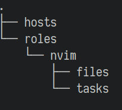
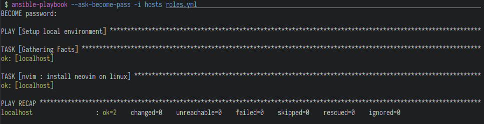

In the life of every linux enthusiast comes the point, where he has a lot of individual configuration build up and wants to migrate these settings over to another machine as seamlessly as possible. At this point a whole philosophy of how to do this is coming into play. Today this philosophy is bundled under the name: dotfiles. Historically dotfiles are the config files, which lie in your home directory. Because they try to be invisible to the user they start with a dot (which is the linux convention for invisible files).
I started the classical approach like many others and kept a git repository with all the important dotfiles I want to share between my machines. A shell script lies in the root directory, which symlinks everything inside the dotfiles sub directory to the home directory. In the beginning this was great. All my important applications, like vim, were configured after executing the shell script. From that point on I could change my configuration files, which were synced back to the git repository. When I was at new consistent state, which I wanted to share, I did a git push. Afterwards I could pull the changes onto my other machines. My main concern with this approach arised when more and more application implemented the xdg-user-dir. Now most of the dotfiles were located in my .config directory and the symlink linked to ~/.config itself. Now I had to differentiate a lot between files I want to track and those I don’t before every commit. Long story short: I found a new and better approach, which I want to present to you: Ansible.
You might think now: “Ansible? Really? That’s total overkill for syncing dotfiles!” That’s true, but on the other hand it’s much more than just for syncing my dotfiles. But first of all for everyone, who never heard about Ansible. Ansible is a project written in Python, which helps you create reproducible systems. The normal use case for Ansible is as a configuration manager. Ansible projects mostly consist of YAML files, in which you define a want to state of a system. Then you apply this state to a system and Ansible syncs everything between the system and your YAML files. So in many ways it can be compared to Terraform, which I talked a lot about in my previous posts. But I see Ansible on a level lower than Terraform. While Terraform is about the big picture representing your whole infrastructure consisting of many virtual Servers and other cloud services, Ansible takes care about each and every system in this infrastructure. So it is more like docker, but you install and configure stuff on the system itself. Ok, this should be enough of an intro to Ansible. Also because we don’t use it in it’s intended way here…
Let’s dive into my totally over engineered dotfiles!
Getting a base structure built up
Normally you provision other systems from one operator system, mostly via SSH. But we want to use Ansible on the current system. Sure it would also be cool, to provision a new system from some sort of main machine, but in reality it was never necessary for me. So the first thing we do, is to tell Ansible we want to execute everything on localhost. Therefore we create a hosts file in our new dotfiles directory, with the following line of code:
[local]
localhost ansible_connection=localThis will tell Ansible which hosts to provision.
Now we need to talk about two important concepts of Ansible. The first one are playbooks. Playbooks are Ansible’s infrastructure as code so to say. They demonstrate the want to be state of a system and are described in a descriptive manner in form of YAML files. The Ansible docs describe playbooks as the instruction manual for configuration, deployment and orchestration.
The second important concept are roles. Ansible roles are a form of structuring your playbooks and make them reproducible. We mainly use roles to structure our dotfiles and keep different application configurations separated. For example I reuse my roles in different forms for my Linux and OSX machine, because the installation process is different, but the configuration is the same. Roles dictate a special directory structure. This way Ansible is able to magically run those roles without setting too much manually. I will go into more detail, when we create our first role. All roles are located in the roles sub directory.
Create your first role
As an example we install neovim, but this can be any software you want to always have installed. For this, we create a nvim sub directory in the roles directory. In the nvim sub directory we create a tasks sub directory. So the current directory structure should look like this:

In the tasks directory we create a file called main.yml. This file is the starting point of a role and will be called automatically. Here we add the following instruction:
Basically everything in playbooks is defined in these YAML blocks. They follow a common structure starting with an optional name, which is printed during execution. So that you know what’s currently done. Then the following key specifies a module, which does some sort of operation. There are many prebuild modules, which are shipped with Ansible. Of course you can also write your own module, but the amount of choice is so overwhelming, that I never ran into this situation.
The package module does the operation of downloading a package with your systems package manager for example. If you execute this on an Arch Linux machine, a package is downloaded via Pacman. If you execute this on Mac OSX, homebrew is used. There are also the respective modules for Pacman and homebrew, if you already know that you execute this playbook on this specific OS.
Every module has some mandatory and optional parameters. See the package module for example. These are set inside of the package block. The first parameter name takes one or more names of packages. The second parameter state tells if the packages defined under name should be present or absent. Also there is an optional parameter use, where you can define which package manager to use. In our example we omit this parameter, which results in Ansible searching for the correct one to use on your system.
Now you can also see why I was talking about the declarative nature of Ansible. We don’t tell Ansible what and how something needs to be done. We just tell what we want to have. We want to have neovim and the python package neovim present on the system. Ansible takes care about the rest. In a normal shell script for example we would need to explicitly tell, with which package manager we want to download a specific package and only if this package isn’t already installed. Otherwise do nothing.
The last part of this snippet (become: yes) says that this block should be executed as root. This is outside of the package block, because it’s not specific to this module, but can be appended to every block. In this case we need to be root, because normally only root users are able to install new software via the package manager.
Now let’s execute this role. First we need a new YAML file, which we specifically execute by Ansible. In this file we also define the roles, which should be executed. Let’s create a file call roles.yml in the root directory with the following content:
As always we give this block a name and set the desired host. This represents the key of the hosts init file, we defined in the beginning. Ansible will take the stuff under that key and execute the roles, which are defined afterwards, on this host.
Now we execute the Ansible playbook script via:
The –ask-become-pass flag needs to be given, because we have at least one block, which needs root access. This causes Ansible to ask for your password in the beginning, so Ansible can execute the according blocks as sudo. The -i flag specifies the inventory, where the hosts are defined. In our case we pass the hosts file. As the main argument we pass Ansible the roles.yml, which then executes the roles defined in that file. This should give you something like this output (if you already have those packages installed) or a slightly different output. Also this should be executable by every Linux distribution as long as the package names match.

As a quality of live addition I would create a shell script called install or something, which itself executes the ansible-playbook command above, because the command itself is very daunting to type over and over again. I also use the shell script for executing ansible-playbook with different flags on different systems and passing environment variables, which are then used by Ansible.
Symlink nvim dotfiles
Now we want to symlink some dotfiles for neovim. In this example we will only symlink the init.vim file. First place your init.vim into the files directory, which we created earlier in the nvim role. Then we add a new block to the main.yml in the nvim role:
- name: symlink init.vim
file:
src: "{{ ansible_env.PWD }}/roles/nvim/files/init.vim"
path: "~/.config/nvim/init.vim"
state: linkBecause you now understand Ansible playbooks, you can easily read the above block. First we have a name again, which tells us to symlink the init.vim file. Then we make use of the file module of Ansible. As the source we give it the path to our init.vim file. As the path we give it the destination. As the desired state we want to have a link between the source and path.
Executing the playbook again, will now also create the symlink and nvim should now have the settings you normally use. When you do changes to your config and the ansible project is checked into git, you can now automatically sync these changes with your other machines. On the other machines you just clone the repository, execute ansible once and from then on all the files, which are symlinked, are synced automatically. You only need to execute Ansible again, if you added new software, which needs to be synced as well between your machines.
Of course there are also loops to symlink more than one file and directory. You can look it up in my current nvim playbook. I also have a lot of other parts automated, like downloading a vim package manager and downloading all the defined packages from my init.vim. I won’t cover everything here, because this should only be a small overview of how I handle my system setups. If you are curios, you can check my ansible dotfiles repository out and look around yourself. You now should be able to read and understand everything in this repository because the concepts, described before are repeated over and over again.
Handle different kind of systems
In this last part I want to present how I use one role for different systems. The most common example I ran into was Pacman requiring root and homebrew denying being executed as root.
For this case I created two files install_dawin.yml and install_linux.yml in which I defined the different instructions for installing neovim on Linux and on Mac OSX. My Linux version looks like the main.yml from before and my Mac Version looks like this:
- name: install neovim on darwin
homebrew:
name: neovim
state: present
- name: install python-neovim on darwin
pip:
name: neovimAs you can see I need to get python-neovim from pip this time, because it isn’t available in homebrew. But even big differences like this are easy to handle with splitting some blocks in OS specific variants.
The main.yml of the role got changed to this:
- import_tasks: install_darwin.yml
when: ansible_facts['os_family'] == "Darwin"
- import_tasks: install_linux.yml
when: ansible_facts['os_family'] == "ArchLinux"
- import_tasks: config.ymlHere I import the install tasks based on the OS family. Ansible collects some facts about the system, it’s running on in a dictionary. This can be accessed like in the code snippet above. Afterwards I import the config task, which executes everything to configure neovim to my liking. These things are all independent of the underlying OS and can be executed in any case.
Conclusion
First of all these are the basics of some of my system setup. There is a lot more different stuff to discover. But with the things I have shown you, it should be easy to pick up for your dotfiles as well.
Also big thanks to Greg Hurrel from whom I got the base idea of using ansible for my system setup. Also hist dotfiles are a lot more sophisticated than mine. I use it time and time again to look up stuff and use them in my dotfiles. However I think it’s important to start like described in this post, to really create your own Ansible dotfiles repository. It’s totally okay to copy over things, but I think you shouldn’t start with mine or his dotfiles as a basis, because this will force you in a corner, which maybe isn’t the way you wanted to originally design your dotfiles repository.
I download Ansible from the package manager of my OS, clone the repository and execute it. I decided not to pull in Ansible as a third party dependency in the repository because:
- It’s basically available on any systems package manager anyway and therefore easy to install
- You depend again on other python dependencies, which are needed by Ansible
Especially reason 2 is very problematic, because if you use the universal way of installing python packages via pip. You get problems with your systems package manager and if other installed packages have the same dependencies as Ansible does. Your Package manager won’t notice that the dependency was already installed there via pip and will fail overriding the files. Trying to solve this issue by using virtual environments brought even more problems to the table because I needed even more dependencies. That’s why I went with just doing
or
instead of pulling the whole dependency hell into my dotfiles repo.
The last thing I want to mention is that this is only one way of managing system setup/dotfiles. If you just want to symlink your stuff and nothing else. Most probably then this isn’t worth the effort. However if you also want to automate other stuff of your system setup and aren’t comfortable with one of the many options out there, you should definitely give Ansible a chance. It’s very easy to pick up and thanks to the documentation it’s easy to discover new things. Also creating something like this (which has a practical use case for almost all of us) gives you a good entry point in how to use Ansible and gives you the knowledge to dig deeper and do even more with it. Ansible today is still a very needed skill in the DevOps space.
Thanks for reading. I’m happy to hear your approaches for your system setup or how you handle specific things with Ansible.